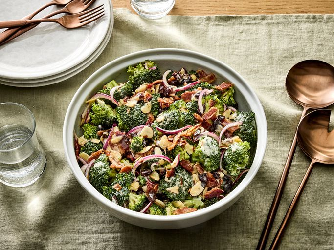

BROCCOLI-SALAD

This homemade broccoli salad uses a tasty combination of fresh broccoli, cranberries, nuts, and bacon tossed in a tangy creamy dressing. You might want to double this recipe for a party or potluck — it goes quick!
Ingredients
- 4 cups fresh broccoli florets (about 1 large head)
- 1/2 cup shredded sharp cheddar cheese
- 1/4 cup red onion, finely chopped
- 1/2 cup dried cranberries
- 1/2 cup sunflower seeds or chopped nuts (pecans, walnuts, or almonds)
- 6 slices bacon, cooked and crumbled
- 1/2 cup mayonnaise
- 1 tablespoon apple cider vinegar
- 1 tablespoon honey
STEPS
- In a large bowl, combine the broccoli, cheddar cheese, red onion, dried cranberries, sunflower seeds (or nuts), and crumbled bacon.
- In a small bowl, whisk together the mayonnaise, apple cider vinegar, and honey. Pour over the broccoli mixture and toss to coat.
- Refrigerate for at least 1 hour before serving to allow the flavors to meld. Enjoy!
BACK-TO-HOME